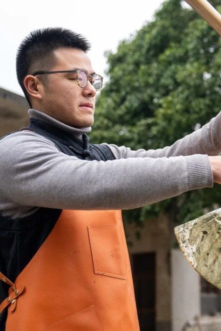

郝冠雄，春晚上春山漆扇手艺人，从事漆艺十二年，毕业于台湾手工艺研究所，现 师承中国工艺美术大师刘比建。中国守艺人独家签约手艺合伙人。
2013年度台湾桥光科技大学第一学期生活创意设计系成果展《漆艺实务》 作品荣获首奖，曾受邀赴法国参加巴黎亚洲工艺品展，2020年为三联书店出版书籍《求同存异：两岸手艺人的匠心对话》制作大漆封面版画， 个人形象出镜同名纪录片。大学毕业后，郝冠雄便以从事漆艺为业，以传播漆文化为己任。2023年春节，郝冠雄制作的漆扇在龙年春晚大放异彩。
近年来，随着国家对非物质文化遗产的保护加大，漆器艺人的受重视程度也在与日俱增，漆器作品逐渐在全国各地成为了代表当地文化的重要符号，“日本漆器冠绝世界，可是源头却来自唐代中国，而在唐代，襄阳漆器是中国所有漆器制作的规范标准，因此，如何能够让这门技艺再次在襄阳生根发芽，仅仅只有我一个人是难以实现的。”
2015年8月，在大洪山手工艺品展销会上，郝冠雄将自己的漆器作品首次在大型文化展览会上展示，引发了会场的轰动，很多人难以想象这个高个子的年轻人竟然能创造出这么精湛的漆器作品。 作为襄阳市工艺美术协会的主要负责人之一曹宗金告诉他，2800年的襄阳历史文化，就是他创作的最好土壤，如果能够继续刻苦钻研打磨，相信不久的未来，他的漆器作品一定可以从襄阳出发，走向全国。
